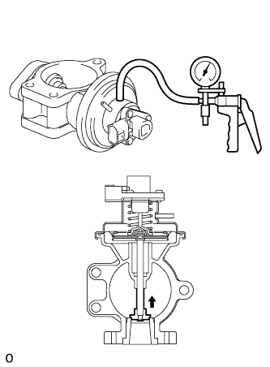
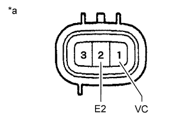
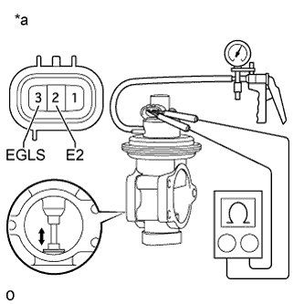
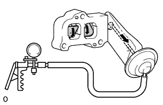

КЛАПАН РОГ (для моделей без DPF) > ПРОВЕРКА |
| 1. ПРОВЕРЬТЕ ЭЛЕКТРИЧЕСКИЙ КЛАПАН УПРАВЛЕНИЯ РОГ В СБОРЕ |
|  |
Проверьте электрический клапан управления РОГ.
Создавая разрежение 27 кПа (200 мм рт.ст., 7,88 дюйма рт.ст.) в мембранной камере, убедитесь, что шток поднимается, и воздух выходит.
Поддерживая указанные выше условия, убедитесь, что утечки отсутствуют, и шток остается на месте.
Убедитесь, что клапан не имеет значительных отложений нагара и не заедает.
Если результат проверки не соответствует указанному, замените электрический клапан управления РОГ.
Проверьте датчик положения клапана РОГ.
|  |
Измерьте сопротивление в соответствии со значениями, приведенными в таблице ниже.
| Контакты для подключения диагностического прибора | Состояние | Заданные условия |
| 1 (VC) - 2 (E2) | 20°C (68°F) | 4,0 - 6,0 кОм |
| *a | Устройство с отсоединенным жгутом проводов (электрический клапан управления РОГ) |
Создайте разрежение в диафрагменной камере.
|  |
Измерьте сопротивление в соответствии со значениями, приведенными в таблице ниже.
| Контакты для подключения диагностического прибора | Состояние | Заданные условия |
| 3 (EGLS) - 2 (E2) | 20°C (68°F) Клапан РОГ полностью открыт | 3,9 кОм |
| 20°C (68°F) Клапан РОГ полностью закрыт | 1,0 кОм |
| *a | Устройство с отсоединенным жгутом проводов (электрический клапан управления РОГ) |
| 2. ПРОВЕРЬТЕ КЛАПАН РОГ № 2 В СБОРЕ (для моделей с охладителем РОГ) |
|  |
Создавая разрежение 33,3 кПа (250 мм рт.ст., 9,83 дюйма рт.ст.) в мембранной камере, убедитесь, что клапан поворачивается, и воздух выходит.
Поддерживая указанные выше условия, убедитесь, что утечки отсутствуют, и клапан не возвращается.
Убедитесь, что клапан не имеет значительных отложений нагара и не заедает.
Если результат не соответствует требованиям, замените клапан РОГ № 2.